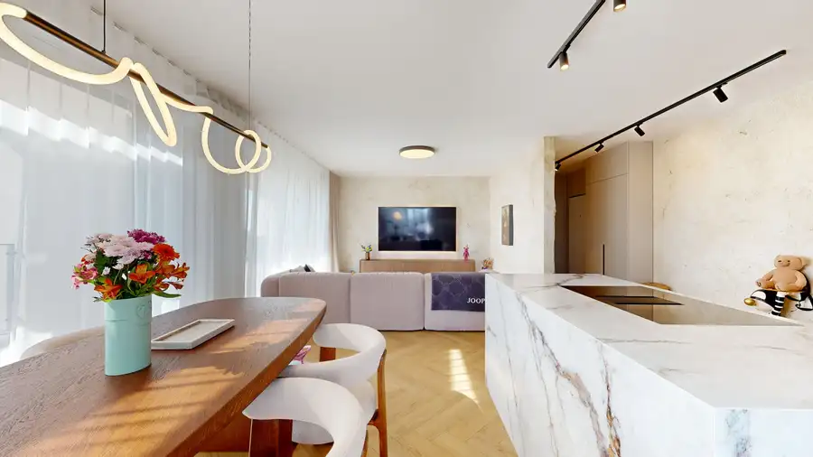
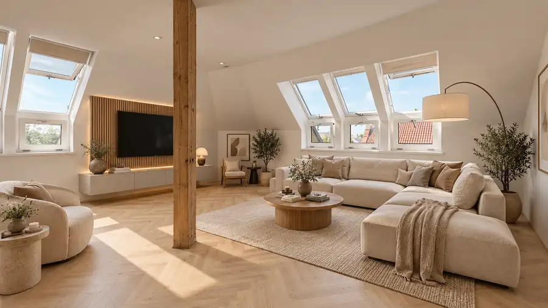
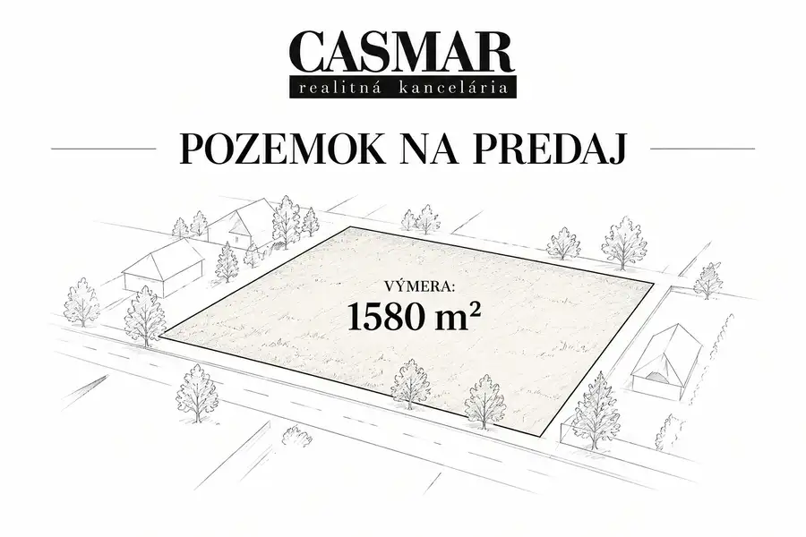

Na predaj rodinný dom v obci Zavar
Zavar
- Plocha103.59 m²
- StavNovostavba
- VlastníctvoOsobné
O nehnuteľnosti
Realitná kancelária CASMAR ponúka na predaj 3-izbový rodinný dom v obci Zavar, ktorý zaujme praktickou dispozíciou, pozemkom s výmerou 629 m² a možnosťou úpravy dispozície na 4-izbový dom. Nehnuteľnosť ponúka komfortné technické riešenia vrátane tepelného čerpadla a podlahového kúrenia.Veľkou výhodou je možnosť dokončiť interiér podľa vlastných predstáv a vkusu. Nový majiteľ tak môže jednotlivé priestory zariadiť presne podľa svojich potrieb a vytvoriť si bývanie, ktoré bude zodpovedať jeho predstavám.Denná časť domu je tvorená obývacou izbou prepojenou s kuchyňou a jedálňou, pričom z obývacej izby je priamy vstup na 20 m² terasu. Pozemok zároveň poskytuje dostatok priestoru na oddych, záhradu či vytvorenie vlastnej vonkajšej zóny.ZÁKLADNÉ INFORMÁCIE3-izbový rodinný dommožnosť úpravy na 4-izbovýzastavaná plocha: 124 m²úžitková plocha: 103,59 m²výmera pozemku: 629 m²terasa: 20 m²pivnica: 20 m²cena: 278 000 €DISPOZÍCIADom pozostáva zo:vstupnej chodby,samostatnej toalety,2 samostatných izieb,kúpeľne s toaletou,jedálne,obývacej izby prepojenej s kuchyňou,špajze.Z obývacej izby je priamy vstup na terasu s výmerou 20 m².Dispozíciu je možné upraviť na 4-izbovú, čo ponúka budúcemu majiteľovi možnosť prispôsobiť si nehnuteľnosť podľa vlastných potrieb.Súčasťou nehnuteľnosti je aj pivnica s výmerou 20 m².TECHNICKÉ VYBAVENIE A VÝHODYtepelné čerpadlo,podlahové kúrenie napojené na tepelné čerpadlo,zateplenie 20 cm polystyrénom,nová fasáda,2× izolácia strechy,vlastný krov,príprava na exteriérové žalúzie,bezpečnostné vchodové dvere,príprava na krb s prieduchmi,vlastná studňa s využitím aj v kúpeľni a na terase,terasa s novou dlažbou.LOKALITAZavar je vyhľadávaná obec v blízkosti Trnavy, ktorá ponúka pokojné bývanie mimo ruchu mesta a zároveň dobrú dostupnosť do Trnavy. Lokalita je vhodná najmä pre rodiny, ktoré hľadajú bývanie s vlastným pozemkom a zároveň chcú zostať v pohodlnom dosahu mesta.Mesačné náklady:elektrina: 120Eurvoda: 10EurCena: 278 000 €Kontakt:Peter Markovič0948 636 000markovic.p@casmar.skV prípade záujmu o viac informácií alebo dohodnutie obhliadky nás neváhajte kontaktovať.
Parametre
| Druh | Rodinný dom |
|---|---|
| Dátum zverejnenia | 5. 10. 2026 |
| Plocha pozemku | 629 m² |
| Stav nehnuteľnosti | Novostavba |
| Typ | Predaj |
| Vlastníctvo | Osobné |
| Zastavaná plocha | 124 m² |
| Úžitková plocha | 103.59 m² |
Kde to je


Mohlo by Vás zaujímať

BytNové10 559 900 €Exkluzívne na predaj | moderne zariadený 4-izb byt s veľkou terasou | novostavba Prúdy Trnava 4-izbový108.52 m² CASMAR Reality ponúka na predaj nadštandardný 4-izbový byt v obľúbenej novostavbe Prúdy, ktorý zaujme moderným interiérom, kvalitným zariadením a…
BytNové10 249 000 €Veľkorysý moderný 4-izbový byt v novostavbe | rázusova, Hlohovec Hlohovec 4-izbový141 m² VEĽKORYSÝ MODERNÝ 4-IZBOVÝ BYT V NOVOSTAVBE | RÁZUSOVA, HLOHOVECCASMAR RK ponúka na predaj priestranný 4-izbový byt s výmerou až 141 m², situovaný v…
PozemokNové Cena dohodouStavebný pozemok v Trstíne – 1 580 m² | pri kaštieli | možnosť výstavby 2–3 domov Trstín 1580 m² CASMAR RK ponúka na predaj atraktívny stavebný pozemok s výmerou 1 580 m² v obci Trstín.Jedinečnou výhodou tejto ponuky je poloha pozemku v tesnej…